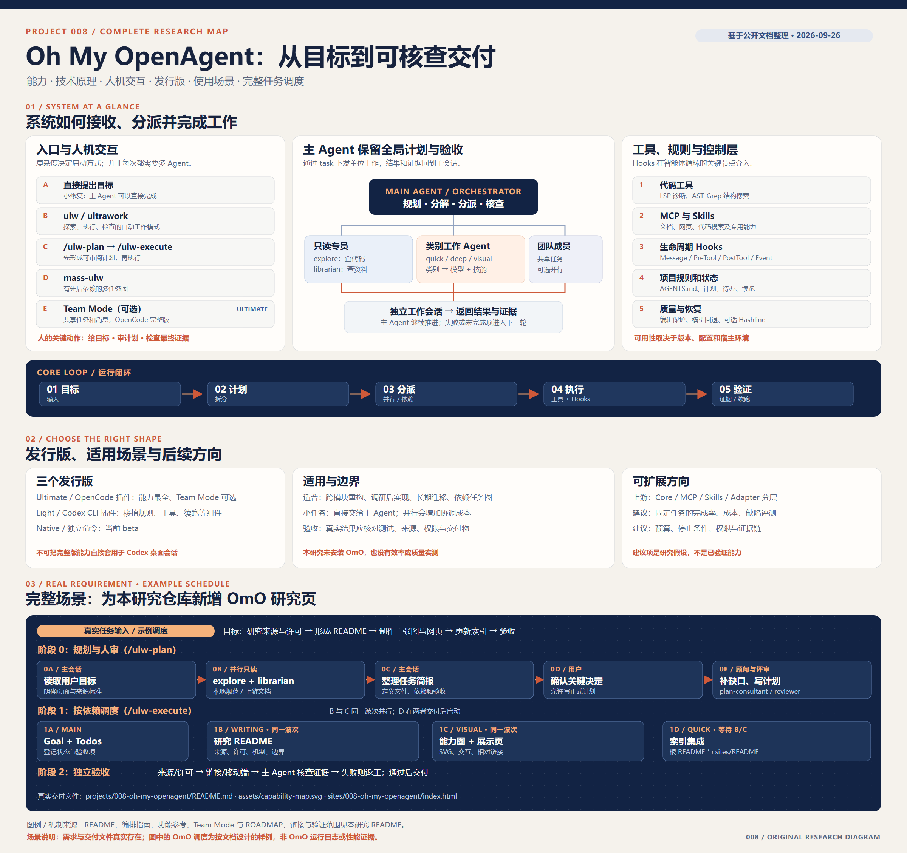
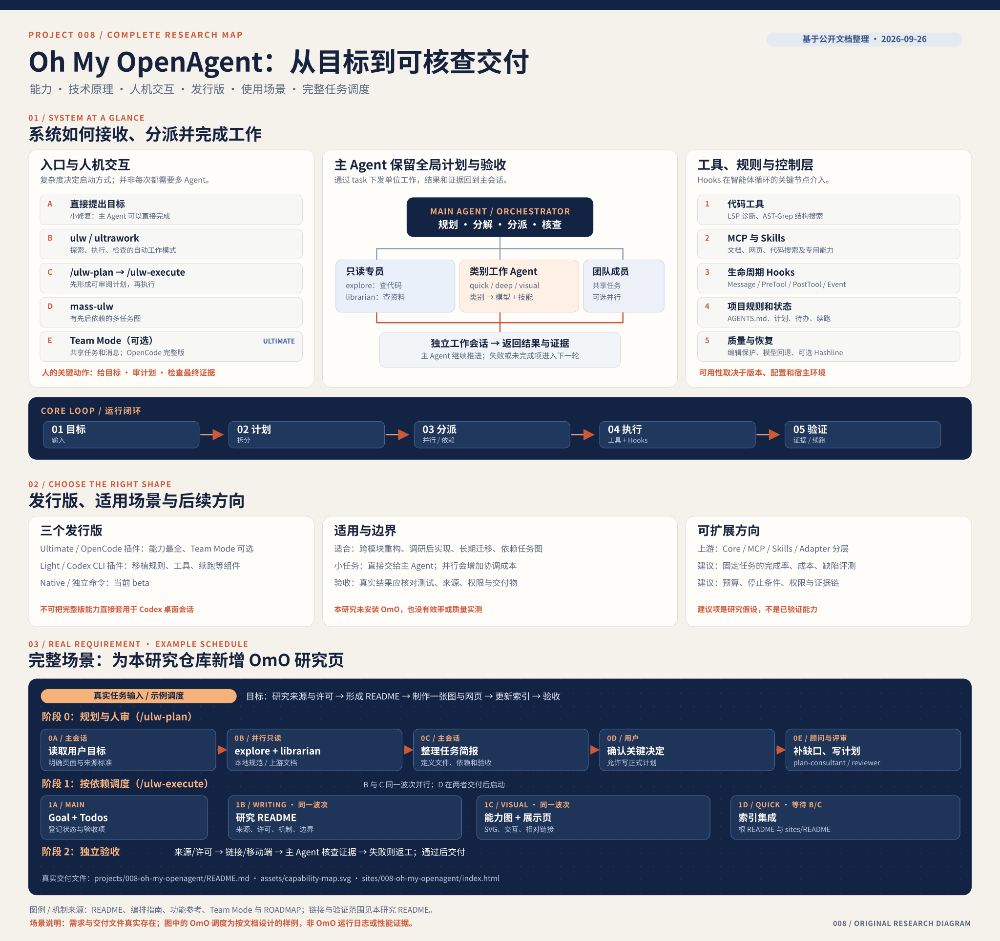

主智能体编排
在当前会话中规划任务、分派工作、读回结果并核查交付。
计划 / 汇总 / 验证OPEN SOURCE RESEARCH / 008
Oh My OpenAgent（OmO）让主 Agent 按任务类别分派独立工作会话，用模型路由、工具、规则和续跑机制推进开发。它适合跨模块、需先调研再实现的任务；对本研究仓库，可借鉴其分工与验收方式，设计可比较的研究流程。
已核对公开文档 · OmO 尚未安装或实测

00 / COMPLETE RESEARCH MAP
上半部解释 OmO 的系统机制，下半部用本仓库新增 008 研究页的真实需求展示调度顺序、并行任务与验收。图中的 OmO 调度是按文档设计的样例。

01 / CAPABILITY MAP
以下是原项目文档描述的机制。各项功能是否可用，仍取决于选择的发行版与配置。
在当前会话中规划任务、分派工作、读回结果并核查交付。
计划 / 汇总 / 验证用搜索、快速修改、深度推理等任务类别选择工作智能体的模型与技能。
独立工作会话LSP、AST-Grep 和 MCP 让智能体查找结构、诊断问题并访问外部资料。
LSP / AST / MCP读取项目的 AGENTS.md 与规则文件，把相关约束带入当前任务。
上下文与约束用计划和待办跟踪长任务，在可恢复的边界继续工作。
ULW / Goal / TodoOpenCode Team Mode 用共享任务与消息邮箱协调并行成员；默认关闭。
仅完整体验适用02 / THE ENGINE
选择下方节点查看对应机制。这里演示的是文档中的工作方式，不会运行 OmO 或调用模型。
03 / THREE EDITIONS
原仓库将 OmO 分成两种宿主插件和一个独立 beta。下面是文档给出的范围，并非本站的安装建议。
完整版
提供完整的智能体、hook、内置 MCP、Team Mode、命令与 `ultrawork` 工作流。
可移植组件
提供规则、LSP、`ultrawork`、续跑等组件；团队工作依赖 Codex 自身的协作能力。
独立命令
以 `omo` 命令运行，内置 OMO 扩展，不加载到 OpenCode 或 Codex；当前为 beta。
版本依据：README 安装与版本说明 ↗。此处的 Codex 指 Codex CLI，不能推断 Light 功能会直接进入当前 Codex 桌面会话。
04 / WHERE IT FITS
原项目指南按任务复杂度选择工作方式。场景与收益需在具体仓库中实测。
单文件改动或边界清楚的任务，直接让主智能体处理。
建议：直接提示需要先探索代码，再实施、检查与修复的功能或重构。
建议：`ulw` 或先写计划任务能清晰分工，且多个工作成员需要共享任务或中途沟通。
建议：按宿主选择团队能力05 / EXTENSION IDEAS
区分上游已经在做的工程方向，与本研究提出、仍待验证的工作方式。
把通用逻辑、MCP、技能与 OpenCode、Codex 等宿主适配代码分层，减少重复。
对固定任务比较完成率、缺陷、人工介入、耗时与模型成本。
为续跑和并行工作增加预算、停止条件、权限和动作记录。
将出处、许可、实测结果和图片来源变成研究任务的验收项。
上游方向依据：OmO 路线图 ↗；其余为本研究提出的扩展设想。
06 / FOR THIS RESEARCH LIBRARY
把一次新项目研究拆成来源核对、能力归纳、网页制作和最终验收。固定任务与验收标准后，再比较时间、质量、人工介入与成本。
这是本研究提出的实验方案；尚无 OmO 在本仓库提升效率的实测结果。
让来源可追溯
将原仓库、文档、许可证和图片出处纳入交付检查。
让质量可比较
记录完成率、修复次数、引用准确度与人工介入。
让自治有边界
给长任务设置预算、停止条件和需要人检查的节点。
07 / EVIDENCE & LIMITS
本页是研究摘要；详细依据和图片说明保存在对应的研究记录中。
对照项目 README、编排、功能、Team Mode、路线图及许可证整理。
未安装 OmO，也未执行真实编程任务；效率、质量与模型成本没有实测值。
安装器提供自治权限选项；匿名遥测默认开启；原项目许可限制部分使用与分发。